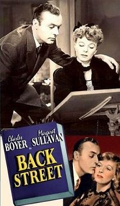

Back Street
Starring: Charles Boyer, Margaret Sullavan, Cecil Cunningham
Director: Robert Stevenson
Writer: Bruce Manning
Producer: Bruce Manning, Frank Shaw
Back Street is a 1941 American drama film directed by Robert Stevenson and starring Charles Boyer, Margaret Sullavan and Richard Carlson. It is a remake of the 1932 film of the same name, also from Universal. The film is adapted from the 1931 Fannie Hurst novel and the 1932 film version which it follows very closely, in some cases recalling the earlier film scene-for-scene.
Trivia
- Nominated for: Academy Award for Best Original Dramatic Score.
- Based on Back Street (book by Fannie Hurst).
Previous Showings
4 Runs • 2 Festivals
Original Billings: 2 runs (October 4, 1932 - April 6, 1941)
Original Run: October 4, 1932 (Tuesday - Saturday)
All runs on record (4):
- October 4, 1932 (Tuesday - Saturday)Irene Dunne, John Boles
- April 6, 1941 (Sunday - Tuesday)Charles Boyer, Margaret Sullavan
- November 17 - 18, 2012UNIVERSAL PICTURES Part 2: 1940-1945w/ Shadow of a Doubt
- November 2 - 3, 2023Universal Pictures: Horror and Morew/ Counsellor at Law